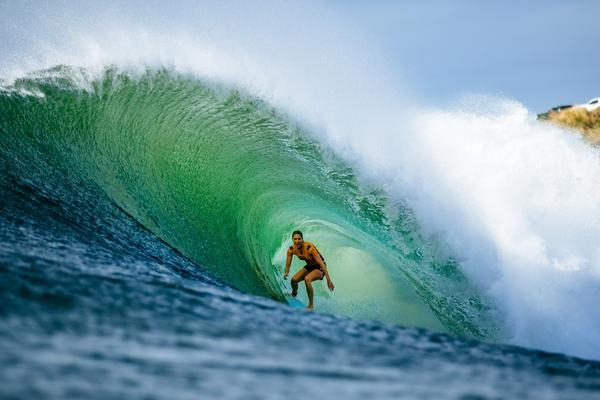

Vamos falar sobre surf!

O surfe é um esporte aquático que consiste em deslizar sobre as ondas do mar em pé sobre uma prancha, aproveitando a força e o movimento da água para realizar manobras. Esta prática milenar, que se tornou um dos símbolos da cultura de praia em todo o mundo, combina habilidade atlética, conhecimento do oceano e muitas vezes um sentido de espiritualidade e conexão com a natureza.
Embora não se saiba exatamente quando ou onde o surfe começou, acredita-se que tenha suas origens nas ilhas do Pacífico, com uma história particularmente rica no Havaí. Lá, o surfe era mais do que um passatempo; era uma parte integrante da cultura, com significado social e espiritual. Os chefes havaianos demonstravam sua destreza e dominância por meio de suas habilidades no surfe. O esporte começou a se popularizar no início do século XX, especialmente na Califórnia e na Austrália, onde as culturas de praia começaram a abraçar o surfe não apenas como um esporte, mas também como um estilo de vida. No século XXI, o surfe é um fenômeno global, com uma comunidade vibrante que se estende por todos os continentes costeiros.
A prancha de surfe é o equipamento essencial do esporte, e sua evolução é uma história à parte. Pranchas de diferentes tamanhos e materiais são usadas dependendo do estilo do surfista e das condições do mar. Outros equipamentos incluem a cordinha (leash), que liga a prancha ao tornozelo do surfista, e a parafina, usada para aumentar a aderência dos pés na prancha.
O surfe exige que o surfista tenha a capacidade de ler as condições do oceano e escolher as melhores ondas. Isso inclui entender as formações de ondas, correntes e ventos. Algumas das manobras mais conhecidas no surfe incluem o cutback (retornar à crista da onda após descer), o tube riding (surfar dentro do túnel formado pela onda), e aéreos (saltos em que a prancha deixa a água).